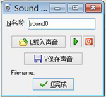

要在游戏中创建一个声音资源，请点击资源菜单中的声音或工具栏上的相应按钮

点击载入声音按钮导入音乐， 这时会弹出一个文件选择框让你选择文件。有两种类型的声音文件，wave文件和midi文件。wave文件通常用于短音效，因为它会占据较多的内存（但也可以用作背景音）。midi文件只能用作背景音乐，此外，默认情况下不能同时播放多首midi音乐，但由于播放方式与wave文件不同，midi文件占用的内存极少。
选择好声音以后可以按播放键试听，还有一个按钮保存声音可以将声音保存为文件，如果你原本的音乐文件丢失了，你可能需要这个。